L1: Leavesden Aerodrome, Leavesden Green
H.
G. WELLS' INVISIBLE MAN: Point
of Destruction (Quentin Lawrence: 1959)
Brady arrives in his car to investigate a series of aircraft crashes.
L2: Gade Avenue, Watford
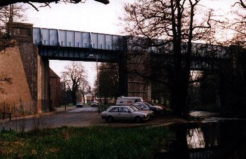
H.
G. WELLS' INVISIBLE MAN: Point
of Destruction (Quentin Lawrence: 1959)
Stefan (Derren Nesbitt) and Katrina (Patricia
Jessel) follow Brady's
car down Gade Avenue and watch as he crashes his car into the River
Gade. He escapes from the car and phones his sister from a call box as
the police arrive.
L3: British Rail Centre, The Grove, The Grove Park, Grove Mill Lane, Watford
THE
AVENGERS: Man-Eater of
Surrey Green (Sidney Hayers: May 1965)
Laura Burford (Gillian Lewis) is lured away from
her work with Alan
Carter (William Job) at their greenhouses. Steed (Patrick
Macnee)
visits the country home of Sir Lyle Peterson in his Bentley, and almost
sits on a deadly cactus when leaving. Steed, Mrs Peel (Diana
Rigg) and
Dr. Sheldon (Athene Seyler) return to Peterson's
armed with weedkiller.
THE
AVENGERS: The Danger
Makers (Charles Crichton: November 1965)
Steed and Emma arrive at the gates of the Hospital in Steed's Bentley
and drive in. Following a postcard clue of the house, Steed drives to
Manton House, a war museum. Major Robertson drives Mrs Peel up to
Manton House at speed, over the bridge. Steed and Mrs Peel depart to
new adventures on go-karts.
THE
AVENGERS: The
See-Through Man (Robert Asher: November 1966)
Mrs Peel (Diana Rigg) arrives too late to save Lord
Daviot at Daviot
Hall.
THE
AVENGERS: Never, Never
Say Die (Robert Day: February 1967)
Whittle (Christopher Benjamin) is driving in the
country just before he
first knocks down Professor Stone.
THE
CHAMPIONS: The
Beginning (Cyril Frankel: 1967)
Nemesis agents Sharron Macready (Alexandra Bastedo),
Craig Sterling
(Stuart Damon) and Richard Barratt (William
Gaunt) wait outside a
Chinese research laboratory for a signal from an inside man, Ho Ling
aka 'Julius Retford' (Rick Young). After breaking
into the
establishment and collecting samples of deadly bacteria the Nemesis
agents are pursued by Chinese guards (lead by Anthony Chinn).
Ho Ling
manages to get a seat in one of the pursing trucks so he can report
back to Geneva.
THE
CHAMPIONS: The
Invisible Man (Cyril Frankel: May 1967)
Hallam and Sumner arrive back at Hallam's country consulting rooms and
clinic.
THE
CHAMPIONS: The
Experiment (Cyril Frankel: June 1967)
A man with super human strength and speed breaks into the Ministry of
Technology Research Unit.
THE
AVENGERS: The Positive
Negative Man (Robert Day: August 1967)
Steed (Patrick Macnee) visits the derelict Risley
Dale Electronic
Research Laboratory, gets an electric shock from a van and - with Mrs
Peel (Diana Rigg) - meets Cresswell (Ray
McAnally). Mankin (Peter
Blythe) flees from the electrical killer along the railway
lines and
dies on the fence. Mrs Peel and Steed return to Risley Dale where
Cresswell and Haworth (Michael Latimer) prepare to
finish them off.
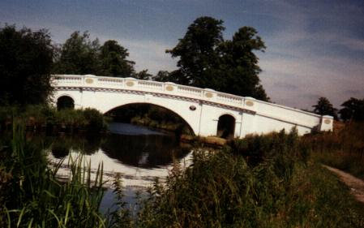
THE
AVENGERS: They Keep
Killing Steed (Robert Fuest: August 1968)
Baron Von Curt (Ian Ogilvy) drives Tara to the
bridge where she jumps
into the river - and Mother's HQ. The Baron collects Tara and they
drive off.
DEPARTMENT
S: The Bones of Byrom
Blain (Paul Dickson: 1968)
An armed guard patrols the grounds of Marling Dale.
DEPARTMENT
S: Spencer Bodily is
Sixty Years Old (Leslie Norman: 1969)
Jason manages to steal a box of BHT from Ingrid Von Epsdorf’s house.
(Identified by Geoff Dodd, May 2018)
L4: Gatehouse, The Grove Park, Grove Mill Lane, Watford
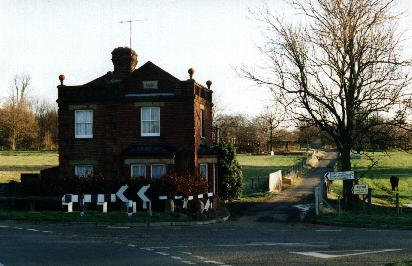
THE
AVENGERS: The Danger
Makers (Charles Crichton: November 1965)
Mrs Peel has a hairy drive with Major Robertson, in his Sunbeam Alpine,
through the gates and up the road, narrowly missing another vehicle!
L5: Watford Town Centre
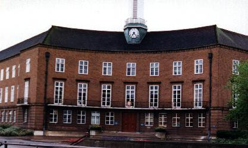
THE
SAINT: The Well
Meaning Mayor (Jeremy Summers: 1963)
Templar's Volvo pulls up in front of the Seatondean Town Hall (Watford Town Hall). Later Hackett's Renault drives away from Templar’s hotel, through Seatondean (The Parade, Watford).
(Spotted by Harper Habbersett, March 2026)
THE
SAINT: Iris
(John Gilling: 1963)
Extensive use of the interior of the Palace Theatre, Clarendon Road
posing as “The Warwick Theatre” where the cast of ‘The Exit Room’ are
in rehearsals.
THE
AVENGERS: Two's a Crowd
(Roy Baker: May 1965)
Webster (Patrick Macnee) arrives at the conference
centre (Watford Town
Hall) and is vetted by two security men. Later the two men
see Webster
back to his car and he drives off.
THE
AVENGERS: The Girl
From Auntie (Roy Baker: October 1965)
An old lady (Mary Merrall) leaves the chambers of
solicitors, Barrett,
Barrett and Wimpole (30 Clarendon Road, redeveloped)
on a bicycle just
as Georgie Price-Jones and John Steed arrive by taxi. They find
Barrett, Barrett and Wimpole stabbed to death in a car parked outside
the building Later Ivanov bids farewell to Steed outside the
offices of Art Incorporated (on the junction of Clarendon
Road/Shady
Lane) but Steed directs the taxi driver to drive around the
block
before he enters the building for a second time.
THE
SAINT: Escape Route
(Roger Moore: October 1966)
The Saint manages to escape from Teal and is chased by the Inspector in
a police car (along Queens Road (now pedestrianised
and adjacent to the
Harlequin Centre) heading towards Watford High Street with
Woolworths
(now McDonalds) on the corner of Kings Street. It
has now been
redeveloped).
(Identified by John Capel, February 2012)
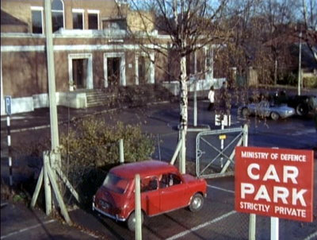
THE AVENGERS: The See-Through Man (Robert
Asher: November 1966)
John Steed and Emma Peel exit the Ministry of Defence records Office
(Watford Central Baths, Peace Prospect) during their
investigation of
the recent theft of documents. Steed Bentley sets off in his Bentley to
interview Quilby whilst Mrs Peel takes her Lotus to visit Sir Andrew
Ford. They are observed by Ulric, one of Major Vazin’s men, from a Mini
parked near by.
(Spotted by David Noades July 19th,2005)
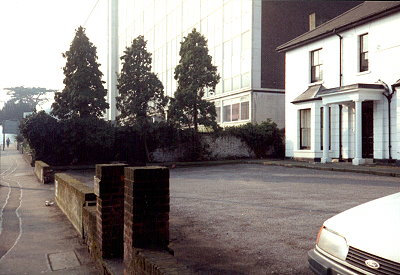
THE
AVENGERS: Death's Door
(Sidney Hayers: May 1967)
As Lord Melford (Allan Cuthbertson) and Steed (Patrick
Macnee) get into
the car that is to take them to the conference they witness an accident
on the road opposite (on the junction of Clarendon Road/Shady
Lane).
THE
AVENGERS: The Return
of the Cybernauts (Robert Day: 22nd May, 1967)
A strange spire is shown as the cybernaut approaches on it's first
mission (St. John's Church, Sutton Road).
(Spotted by Mike Richardson, 22nd May 2012)
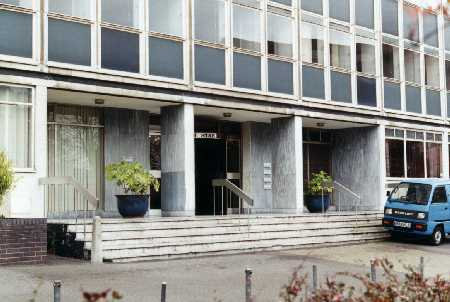
THE
AVENGERS: You Have
Just Been Murdered (Robert Asher: July 1967)
Rathbone arrives at his bank (Star House) to
collect one million pounds
watched by Mrs peel from her car.
THE
AVENGERS: Wish You
Were Here (Don Chaffey: September 1968)
Steed and Tara arrive at the office of Tara's Uncle Charles in Steed's
yellow Rolls. They wait until Kendrick leaves before entering.
THE
AVENGERS: Homicide and
Old Lace (Vernon Sewell: November 1967)
Tara, in the Lotus Elan +2, is pursued by the Intercrime men down the
spiral ramp of Church Car Park, Exchange road.
THE
AVENGERS: Love All
(Peter Sykes: November 1968)
Coordination and Control meeting takes place in ministry building
(Watford Town Hall). Steed parks his yellow Rolls
outside and enters.
Sir Rodney (Robert Harris) escapes from the
ministry in his grey Rolls
avoiding capture by the guards.
RANDALL
AND HOPKIRK [DECEASED]: That's
How Murder Snowballs (Paul Dickson: November
1968)
Establishing shots of the Palace Theatre, Clarendon Road. (Extensive
use is made of the interior of the theatre in this episode).
RANDALL
AND HOPKIRK [DECEASED]: It's
Supposed to be Thicker Than Water (Leslie
Norman:
September 1968)
Marty visits a number of London theatres and clubs looking for Fay
Cracken(sequence includes footage shot inside the Palace
Theatre for
That's How Murder Snowballs).
HERE
COME THE DOUBLE DECKERS!:The
Go-Karters (Harry Booth: 1969)
Spring finds himself in the Magistrates Court (Watford Town
Hall).
UFO:
Confetti Check A-O.K.
(David Lane: November 1969)
The Strakers (Ed Bishop and Suzanne Neve) arrive in
their American
saloon, and carry out 'Confetti Check' before entering the building
(Dean Park Hotel, St. Albans Road). Straker (Ed
Bishop) picks up Nina
Barry (Dolores Mantez) in his Jensen on the top
level of Church Car
Park, Exchange Road. They leave by the spiral ramp followed by a
detective in a Ford Corsair. Lower High Street seen in back projection
as the detective follows Straker's car.
L6: Shakespeare Street/Milton Street/Copsewood Road, Watford
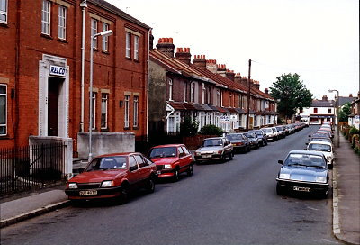
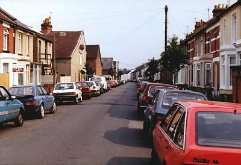
THE
AVENGERS: The Morning
After (John Hough: October 1968)
At the Rostarn Trading Company (the junction of Shakespeare
Street and
Milton Street) Steed (Patrick Macnee) and
Tara wait to ambush Merlin
when he arrives. Next morning Steed wakes to find the street (Milton
Street) deserted. He goes to make a phone call outside the
local shop
(Garfield Street) but is unable to get through.
Having no luck in
contacting his superiors, Steed handcuffs Merlin (Peter
Barkworth) to
his Rolls Royce and they drive off down Shakespeare Street. After they
find the street blocked they proceed to walk on foot handcuffed
together. The television van drives down Stanmore Road. The patrol of
troops led by Sergeant Hearn (Brian Blessed) stop
on Copsewood Road, and
search the houses. They then enter the Rostarn Trading Company offices.
Steed, Jenny, Yates and Merlin arrive at the offices.
(Additional deatil provided by Piers Johnson, May 2026)
L7: Watford Football Ground, Vicarage Road £
SABER
OF LONDON: Saber's Bow
and Arrow (Max Varnel: 1958)
James Street Edinburgh, next to the arena (Watford Football
Club). Pete
Paulson (Neil McCallum) waits for the kidnappers to
use the telephone
box. Frank (Michael Bryant) and Mark Saber (Donald
Grey) wait in
Saber's Porsche 356 cabriolet nearby. When Freddy (Geoffrey
Hibbert)
uses the phone Saber, Pete and Frank pounce.
RANDALL
AND HOPKIRK [DECEASED]: But
What a Sweet Little Room (Jeremy Summers: ??)
The van carrying Rawlings, Elliot and a captive Jeff arrives in a side
street next to a football stadium (Occupation Road).
They use the noise
of the football crowd in the adjacent stadium to cover Jeff's cries as
they beat him up.
(Spotted by Claire and Michael Saunders, August 1995)
THE
PERSUADERS!: Read And
Destroy (Roy Ward Baker: 1971)
Danny Wilde (Tony Curtis) arrives for a meeting
with Pfeiffer (Elliott
Sullivan), the CIA man, but they are being eavesdropped upon
by Ivan
Ivanov (Harvey Hall).
L8: The Royal Oak, Kitters Green, Abbotts Langley
INSPECTOR
MORSE: Masonic
Mysteries (Danny Boyle: 1989)
Morse (John Thaw) rewards Lewis (Kevin
Whately) for his support by
taking him for a pint of beer at a local pub.
L9: Gypsy Lane, Watford
THE
AVENGERS: A Funny
Thing Happened on the Way to the Station (John
Krish:
March 1967)
The train passes through a tunnel (Watford Tunnel to the
North of
Watford Junction station) on the way to Norborough Junction
with Lucas
aboard.
(Identified by Philip Langton and confirmed by Alan Field,
December
2007)
THE
AVENGERS: Bizarre
(Leslie Norman: February 1969): Helen Pritchard
recalls how she went to
feed her dog in the guards van of her sleeper train and was thrown off
the train by a corpse.
(Spotted by Alan Field, December 2007)
L10: Watford Junction Railway Station
THE
AVENGERS: A Funny
Thing Happened on the Way to the Station (John
Krish:
March 1967)
The train arrives at Norborough Junction. Later the same station is
seen after Mrs Peel is saved from being thrown onto the tracks and in
various shots of trains passing through stations.
(Identified by Philip Langton and confirmed by Alan Field,
December
2007)
L11: Ebury Road, Watford
THE
HUMAN JUNGLE: Struggle
for a Mind (Sidney Hayers: Feb/Mar 1964)
Dr Jimmy Davis (Michael Johnson) arrives at the
Kross family home
(Ottoman Terrace), where he is admitted. Upon
leaving, Davis returns to
his car, where he is joined briefly by Mrs Kross (Kay Walsh).
Later, Dr
Roger Corder (Herbert Lom) and Liz (Joan
Collins) arrive in his Humber
Super Snipe and leaving the vehicle she walks across the road to some
terraced houses, where she is met by Mrs Kross and Angie (Margaret
Whiting). Corder then drives the Humber away towards a tunnel
(Radlett
Road and Ebury Road). After being deceived, Liz runs down
some steps
and along the pavement, before walking alongside a brick wall. Looking
for her daughter, Mrs Kross also runs down the steps and then walks up
a rise towards her home, where she finds Corder’s parked car. Having
failed to locate Liz, Dr Roger Corder parks his Humber Super Snipe and
walks across the road to a telephone box (corner of
Shaftsbury Avenue
and Ebury Road), where he calls Dr Tate to give him the news.
L12: Durrants House, Lincoln Way, Croxley Green
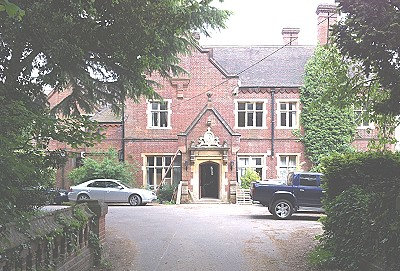
THE
SAINT: When Spring is
Sprung (Jim O'Connolly: March 1967)
Joanne drives spring to the safe house followed by Templar in his
Volvo. Templar is captured. Later Joanne Dell (Toby Robins)
and Colonel
Hannerley (Allan Cuthbertson) leave in a hearse
with Spring aboard.
Before they leave Vulanin (George Pastell) orders a
Russian guard
(Peter Brace) to kill Simon Templar.
(Identified by Geoff Dodd, May, 2012)
Television:
NEW TRICKS: God's Waiting Room (2007)
L13: Oxhey Park, Watford
THE
AVENGERS: The
See-Through Man (Robert Asher: November 1966)
Steed (Patrick Macnee) arrives in his Bentley to
talk to Ackroyd
(Jonathan Elsom).
THE
AVENGERS: Game
(Robert Fuest: June 1968)
Merton Park children's playground, where Steed (Patrick
Macnee) and
Tara (Linda Thorson) find the bodies of Dexter,
Averman and Witney.
L14: The Sun Engraving Company Ltd., Whippendell Road, Watford (redeveloped)
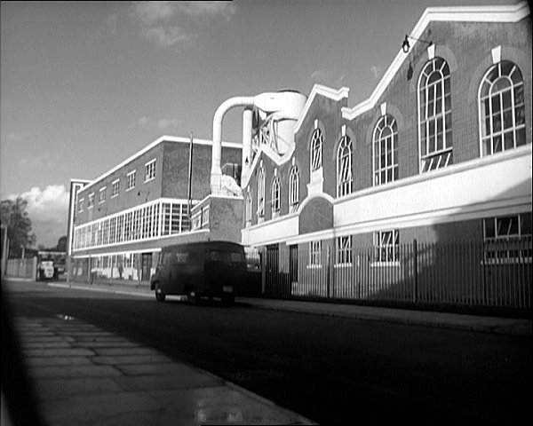